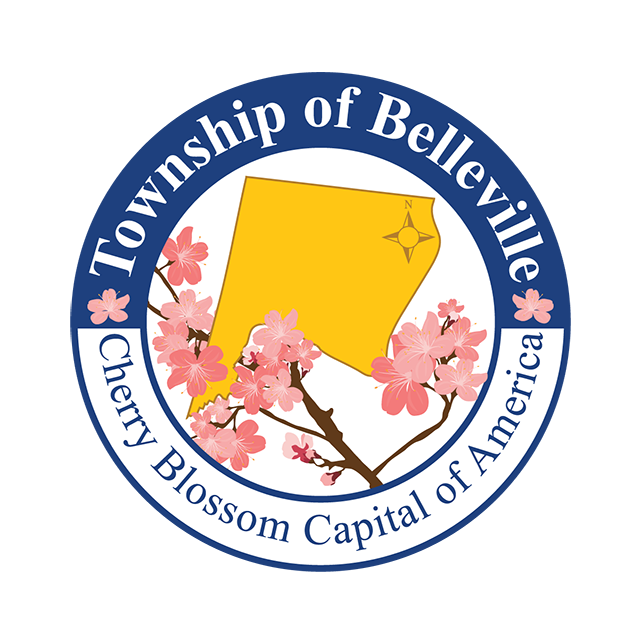
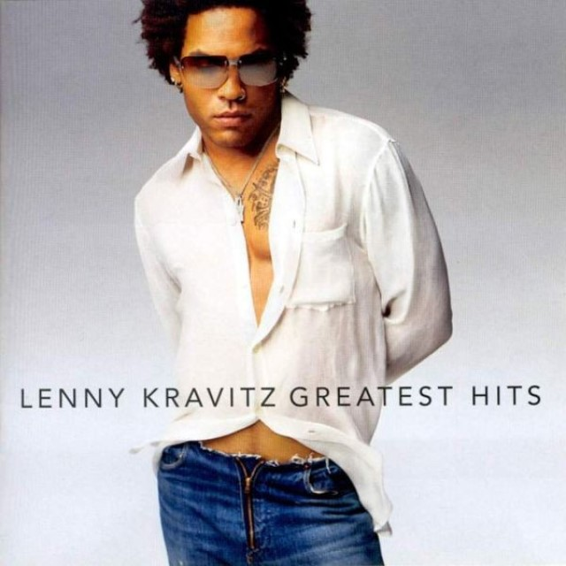

About Me

I am a student passionate about design and technological advancement. I enjoy learning new things and applying them into projects. I am working towards a Computer Science degree at San Francisco State University. I'm interested in web development, software engineering, and user experience design.
I moved here to the Bay Area from Belleville, New Jersey, known for its beautiful cherry blossom trees.Outside of school, I enjoy reading books, taking long walks in Golden Gate Park, and keeping up with the latest music scene. My favorite music genres is Hip Hop, House, RnB, Rock, and Bossa Nova.My favorite song is "It Ain't Over Til It's Over" by Lenny Kravitz.
